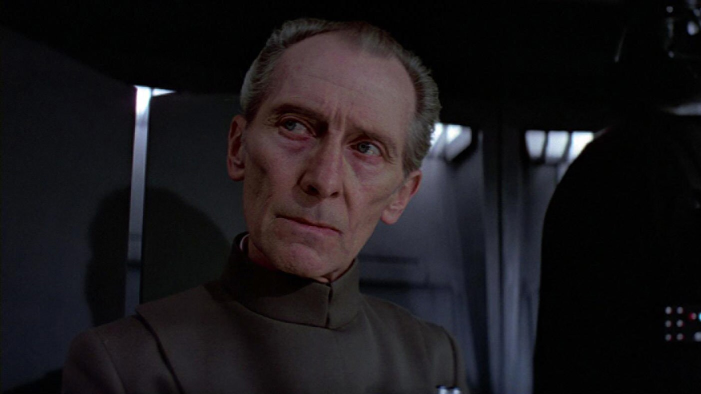

Reparto principal
Mark Hamill — Luke Skywalker

Luke es un pibe de campo de Tatooine que sueña con aventuras. A lo largo de la historia descubre que tiene un destino mucho más grande: convertirse en Jedi y ser clave en la lucha contra el Imperio.
Carrie Fisher — Princesa Leia Organa

Leia es la líder rebelde que, aun siendo joven, demuestra coraje y decisión. Ella lleva los planos de la Estrella de la Muerte y se convierte en símbolo de resistencia contra el Imperio.
Harrison Ford — Han Solo

Han es un contrabandista con mucha picardía, dueño del Halcón Milenario. Arranca como alguien interesado solo en la guita, pero termina mostrando lealtad y jugándose por sus amigos.
Alec Guinness — Obi-Wan Kenobi

Obi-Wan es el viejo maestro Jedi que guía a Luke en sus primeros pasos. Representa la sabiduría y la conexión con la antigua Orden Jedi, además de enfrentarse a su viejo aprendiz, Darth Vader.
Peter Cushing — Grand Moff Tarkin

Tarkin es el oficial imperial a cargo de la Estrella de la Muerte. Es frío, calculador y sin piedad, y muestra el costado más autoritario y militar del Imperio.
Darth Vader — David Prowse

Vader es el villano central: un guerrero Sith imponente, temido por todos. Su presencia oscura y su conexión con la Fuerza hacen de él el brazo ejecutor del Emperador y la mayor amenaza para los héroes.